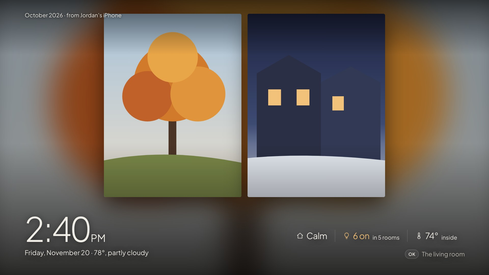

From the sofa it looks still. A photo stays a full minute, and its only move is a 6% zoom over that minute.
A bug: the line about the photo runs over the left photo of a pair. Fixed with whatever is chosen here.
Every photo moves the same way, and a photo is all the screen ever shows between the clock and the facts.